Estratégia de Provisionamento — Lab AWS¶
Guia completo para subir o ambiente lab do zero, validar cada camada e estar pronto para commitar no GitHub com evidências reais.
Visão Geral¶
O provisionamento é dividido em 4 Steps sequenciais que respeitam as dependências entre módulos. Cada step termina com uma validação antes de avançar.
STEP 1 ──────────────────────────── Sem dependências externas
├── networking (VPC, subnets, SGs, NAT)
└── ecr (repositórios de imagem)
STEP 2 ──────────────────────────── Independente de networking
├── sqs (filas + DLQ)
└── dynamodb (tabelas NoSQL)
STEP 3 ──────────────────────────── Depende de networking
└── rds (PostgreSQL — leva ~8 min)
STEP 4 ──────────────────────────── Depende de tudo acima
└── ecs (Fargate Spot — tasks dos 3 serviços)
Tempo total estimado: ~20–25 minutos (RDS é o gargalo)
Pré-requisitos¶
1. Ferramentas locais¶
# Verificar versões
terraform version # precisa >= 1.6
aws --version # precisa >= 2.0
# Se não tiver o tfenv:
brew install tfenv # macOS
tfenv install 1.8.0
tfenv use 1.8.0
2. Credenciais AWS¶
# Opção A — perfil nomeado (recomendado)
aws configure --profile solidarytech-lab
export AWS_PROFILE=solidarytech-lab
# Opção B — variáveis de ambiente
export AWS_ACCESS_KEY_ID="AKIA..."
export AWS_SECRET_ACCESS_KEY="..."
export AWS_DEFAULT_REGION="us-east-1"
# Confirmar identidade
aws sts get-caller-identity
# Esperado: { "Account": "123456789012", "UserId": "...", "Arn": "arn:aws:iam::..." }
3. Senha do banco¶
# Definir e NUNCA commitar
export TF_VAR_db_password="SolidaryLab2024!"
# Mínimo 12 caracteres — validação está no variables.tf
STEP 0 — Validação Estática (sem tocar na AWS)¶
Execute antes de qualquer apply. Detecta ~80% dos erros de graça.
cd terraform/environments/lab
# 0.1 — Formato
terraform fmt -check -recursive ../../ \
&& echo "✅ fmt ok" \
|| (echo "❌ Execute: terraform fmt -recursive ../../" && exit 1)
# 0.2 — Validar cada módulo individualmente
for mod in ../../modules/*/; do
name=$(basename $mod)
cd $mod
terraform init -backend=false -input=false -no-color > /dev/null 2>&1
result=$(terraform validate -no-color 2>&1)
if echo "$result" | grep -q "Success"; then
echo "✅ $name"
else
echo "❌ $name FALHOU:"
echo "$result"
fi
cd - > /dev/null
done
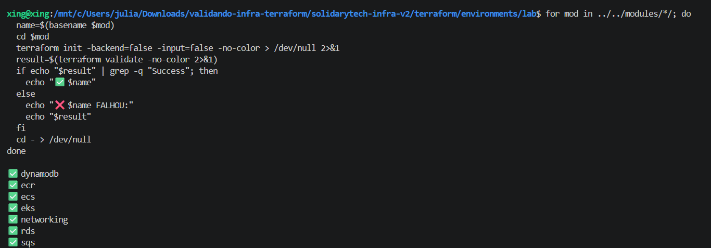
# 0.3 — Init do ambiente lab (backend local por enquanto)
terraform init -backend=false
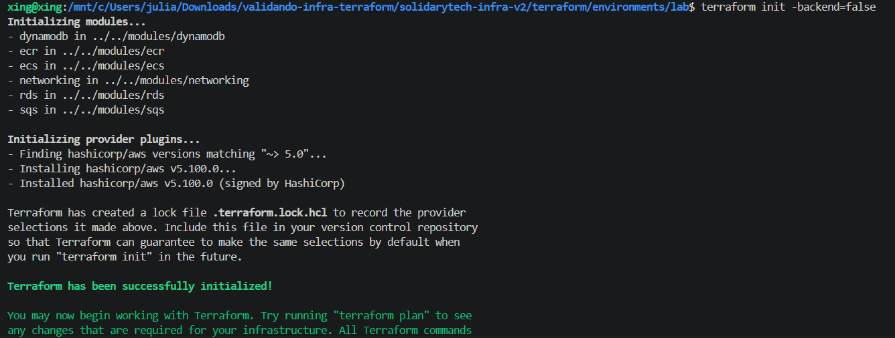
# 0.4 — Validate do ambiente completo
terraform validate && echo "✅ lab válido"
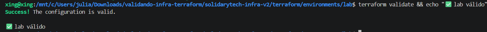
✅ Critério para avançar: todos os módulos validados sem erro.
STEP 1 — Networking + ECR¶
São independentes entre si e não têm dependências externas. Podem ser aplicados em paralelo, mas por clareza faremos em sequência.
cd terraform/environments/lab
# 1.1 — Plan somente networking
# Definir versão do tfenv:
tfenv use 1.5.7
# Plan:
terraform plan \
-target=module.networking \
-var="db_password=${TF_VAR_db_password}" \
-out=step1a.tfplan \
-no-color | tee /tmp/step1a-plan.txt
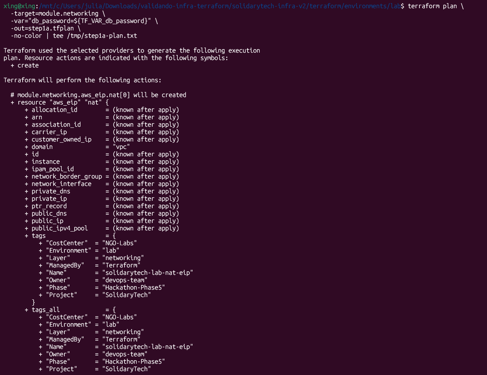
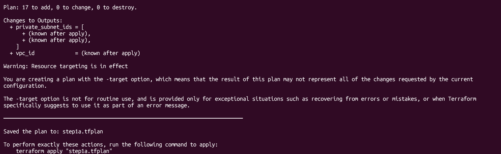
# Checar o que será criado (esperado: ~12 recursos)
grep "^ #\|will be created\|will be destroyed" /tmp/step1a-plan.txt
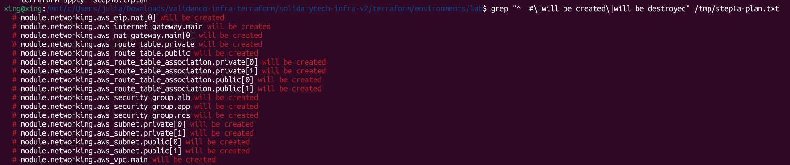
# 1.2 — Apply networking
terraform apply step1a.tfplan
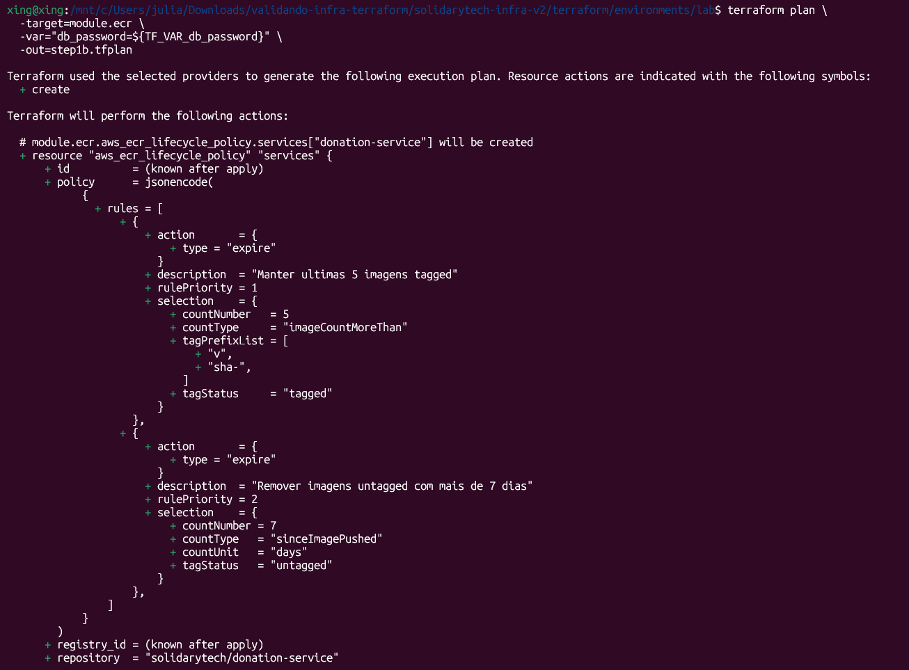
✅ Validar Networking¶
# VPC criada com tags corretas
aws ec2 describe-vpcs \
--filters "Name=tag:Project,Values=SolidaryTech" \
--query 'Vpcs[*].{ID:VpcId,CIDR:CidrBlock,State:State}' \
--output table
# 4 subnets (2 públicas + 2 privadas)
aws ec2 describe-subnets \
--filters "Name=tag:Project,Values=SolidaryTech" \
--query 'Subnets[*].{ID:SubnetId,AZ:AvailabilityZone,CIDR:CidrBlock,Public:MapPublicIpOnLaunch}' \
--output table
# NAT Gateway ativo
aws ec2 describe-nat-gateways \
--filter "Name=tag:Project,Values=SolidaryTech" \
--query 'NatGateways[*].{ID:NatGatewayId,State:State,SubnetId:SubnetId}' \
--output table
# 3 Security Groups
aws ec2 describe-security-groups \
--filters "Name=tag:Project,Values=SolidaryTech" \
--query 'SecurityGroups[*].{ID:GroupId,Name:GroupName}' \
--output table
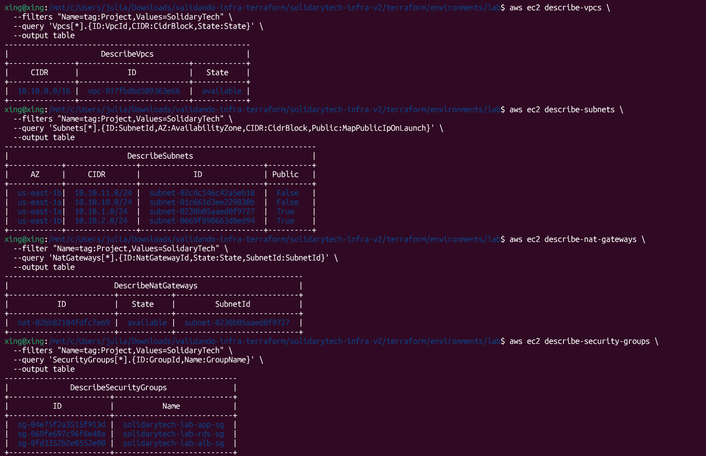
# 1.3 — Plan + Apply ECR
terraform plan \
-target=module.ecr \
-var="db_password=${TF_VAR_db_password}" \
-out=step1b.tfplan
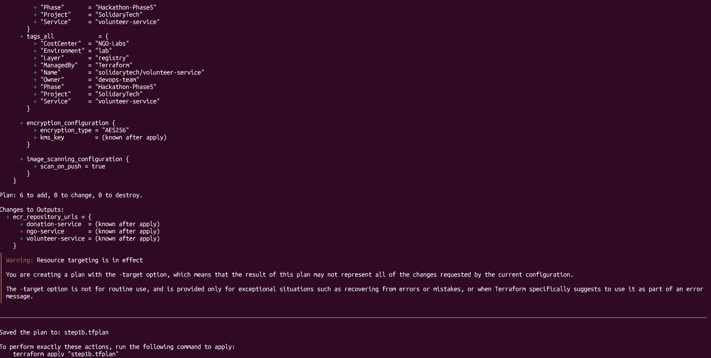
terraform apply step1b.tfplan
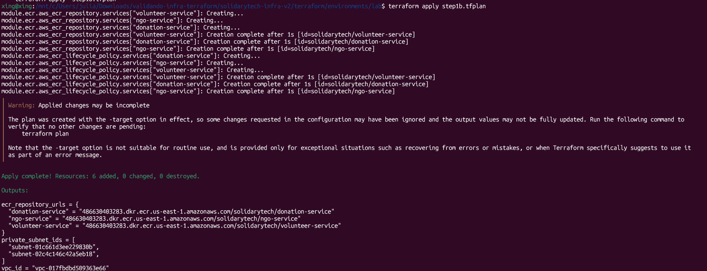
✅ Validar ECR¶
# 3 repositórios criados
aws ecr describe-repositories \
--query 'repositories[*].{Name:repositoryName,URI:repositoryUri,ScanOnPush:imageScanningConfiguration.scanOnPush}' \
--output table
# Testar push de imagem (teste real de acesso)
AWS_ACCOUNT=$(aws sts get-caller-identity --query Account --output text)
REGION="us-east-1"
REGISTRY="${AWS_ACCOUNT}.dkr.ecr.${REGION}.amazonaws.com"
aws ecr get-login-password --region $REGION \
| docker login --username AWS --password-stdin $REGISTRY \
&& echo "✅ Login ECR ok"
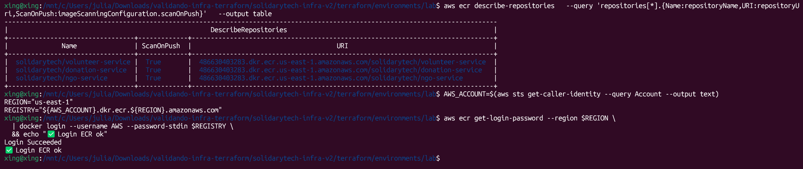
STEP 2 — SQS + DynamoDB¶
Independentes de networking. Rápidos (~1–2 min cada).
# 2.1 — Plan + Apply SQS e DynamoDB juntos
terraform plan \
-target=module.sqs \
-target=module.dynamodb \
-var="db_password=${TF_VAR_db_password}" \
-out=step2.tfplan
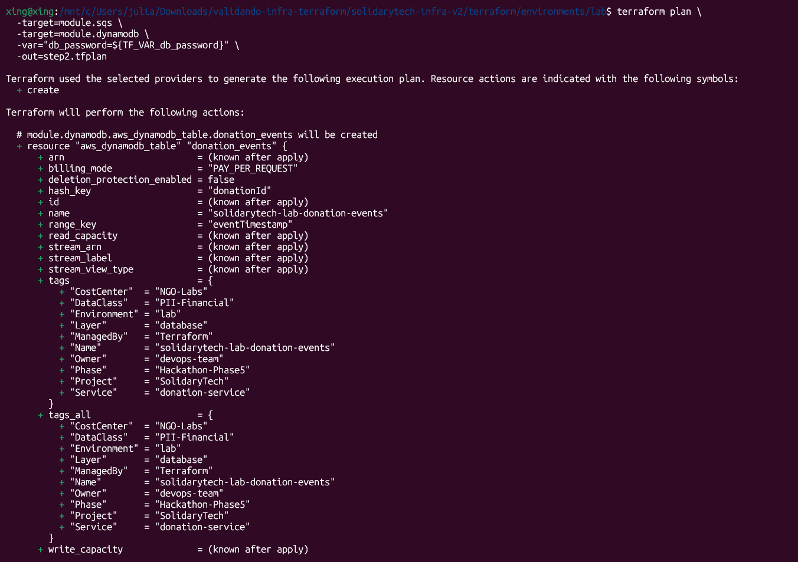
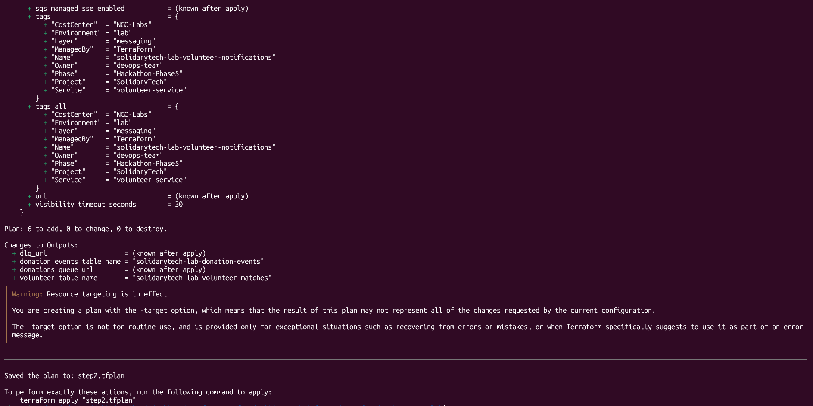
terraform apply step2.tfplan
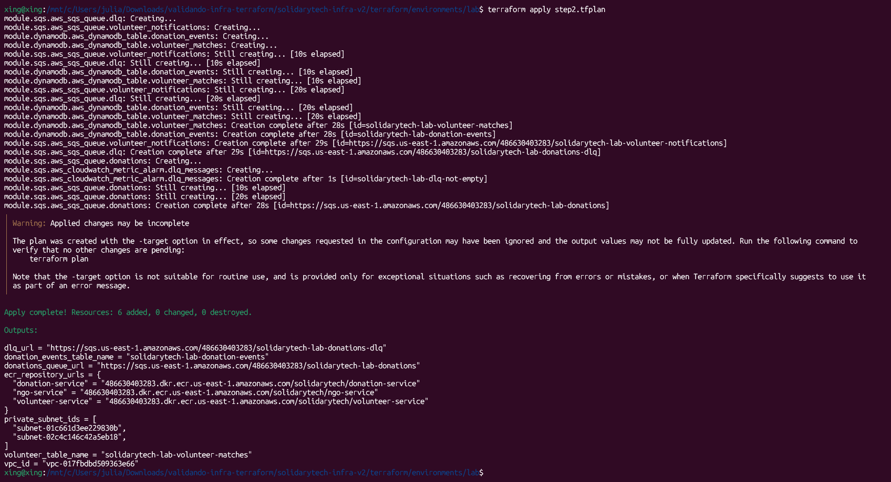
✅ Validar SQS¶
# 3 filas criadas (donations, dlq, volunteer-notifications)
aws sqs list-queues \
--queue-name-prefix solidarytech \
--query 'QueueUrls' \
--output table
# Confirmar DLQ vinculada à fila principal
DONATIONS_URL=$(aws sqs get-queue-url \
--queue-name solidarytech-lab-donations \
--query QueueUrl --output text)
aws sqs get-queue-attributes \
--queue-url $DONATIONS_URL \
--attribute-names RedrivePolicy VisibilityTimeout \
--output json
# Teste funcional: enviar e receber mensagem
aws sqs send-message \
--queue-url $DONATIONS_URL \
--message-body '{"test": "donation-event", "amount": 50.00}' \
--query 'MessageId' --output text
aws sqs receive-message \
--queue-url $DONATIONS_URL \
--query 'Messages[0].Body' --output text
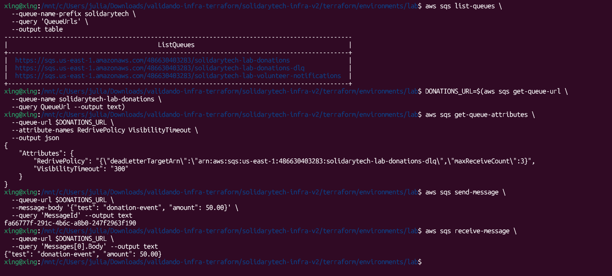
✅ Validar DynamoDB¶
# 2 tabelas criadas
aws dynamodb list-tables \
--query 'TableNames[?contains(@, `solidarytech`)]' \
--output table
# Confirmar PITR habilitado nas duas tabelas
for table in solidarytech-lab-volunteer-matches solidarytech-lab-donation-events; do
status=$(aws dynamodb describe-continuous-backups \
--table-name $table \
--query 'ContinuousBackupsDescription.PointInTimeRecoveryDescription.PointInTimeRecoveryStatus' \
--output text)
echo "$table: PITR=$status"
done
# Teste funcional: inserir e ler item
aws dynamodb put-item \
--table-name solidarytech-lab-donation-events \
--item '{"donationId":{"S":"test-001"},"eventTimestamp":{"S":"2024-01-01T00:00:00Z"},"ngoId":{"S":"ngo-test"}}' \
&& echo "✅ DynamoDB write ok"
aws dynamodb get-item \
--table-name solidarytech-lab-donation-events \
--key '{"donationId":{"S":"test-001"},"eventTimestamp":{"S":"2024-01-01T00:00:00Z"}}' \
--query 'Item' --output json
STEP 3 — RDS PostgreSQL¶
Atenção: este step leva ~8 minutos. O comando wait bloqueia até o banco estar disponível.
# 3.1 — Plan RDS
terraform plan \
-target=module.rds \
-var="db_password=${TF_VAR_db_password}" \
-out=step3.tfplan \
-no-color | tee /tmp/step3-plan.txt
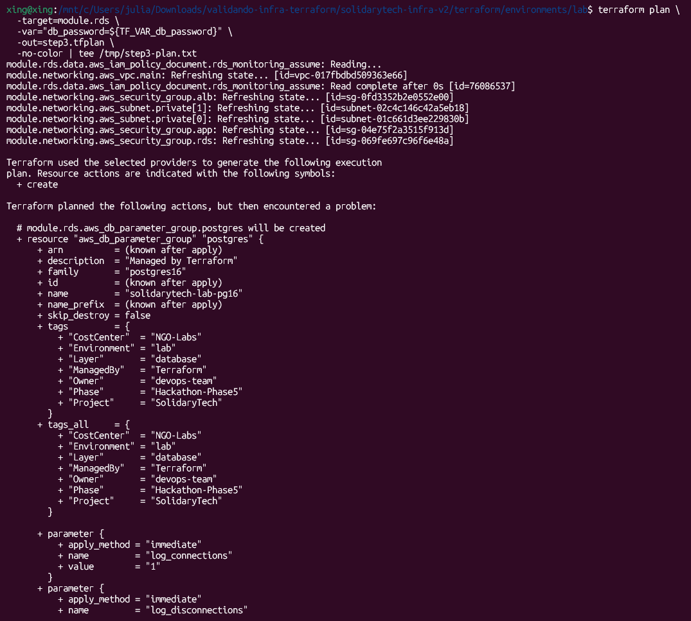
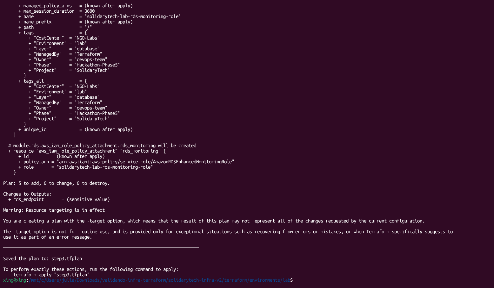
# Checar o que será criado (esperado: ~4 recursos)
grep "will be created" /tmp/step3-plan.txt
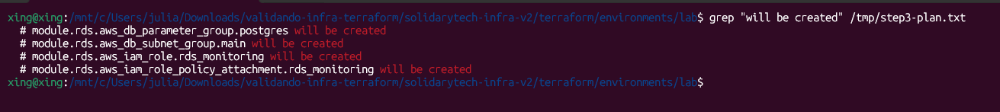
# 3.2 — Apply RDS (aguardar ~8 min)
terraform apply step3.tfplan
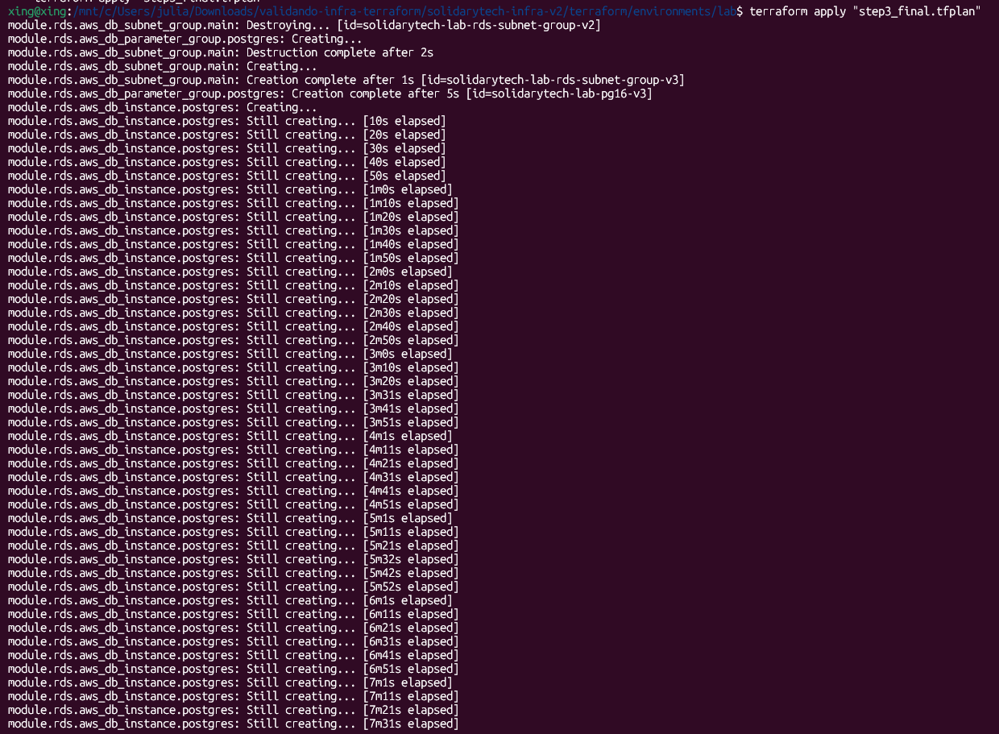
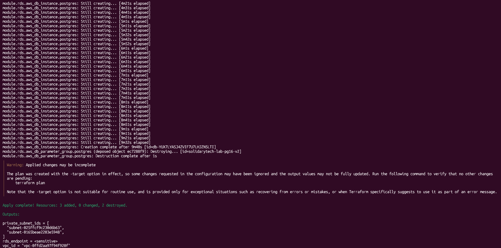
✅ Validar RDS¶
# Aguardar banco ficar available
echo "Aguardando RDS... (pode levar até 8 min)"
aws rds wait db-instance-available \
--db-instance-identifier solidarytech-lab-postgres \
&& echo "✅ RDS available"
# Checar configurações
aws rds describe-db-instances \
--db-instance-identifier solidarytech-lab-postgres \
--query 'DBInstances[0].{
Status:DBInstanceStatus,
Endpoint:Endpoint.Address,
Port:Endpoint.Port,
Class:DBInstanceClass,
MultiAZ:MultiAZ,
Encrypted:StorageEncrypted,
BackupRetention:BackupRetentionPeriod,
PerformanceInsights:PerformanceInsightsEnabled
}' \
--output json
# Pegar endpoint para teste de conexão
RDS_HOST=$(terraform output -raw rds_endpoint)
echo "RDS Host: $RDS_HOST"
# Teste de conectividade (via bastion ou task ECS temporária)
# Alternativa: verificar que o SG bloqueia acesso público
aws ec2 describe-security-group-rules \
--filters "Name=group-id,Values=$(aws ec2 describe-security-groups \
--filters 'Name=tag:Name,Values=solidarytech-lab-rds-sg' \
--query 'SecurityGroups[0].GroupId' --output text)" \
--query 'SecurityGroupRules[?IsEgress==`false`].{Port:FromPort,Source:CidrIpv4,SourceSG:ReferencedGroupInfo.GroupId}' \
--output table
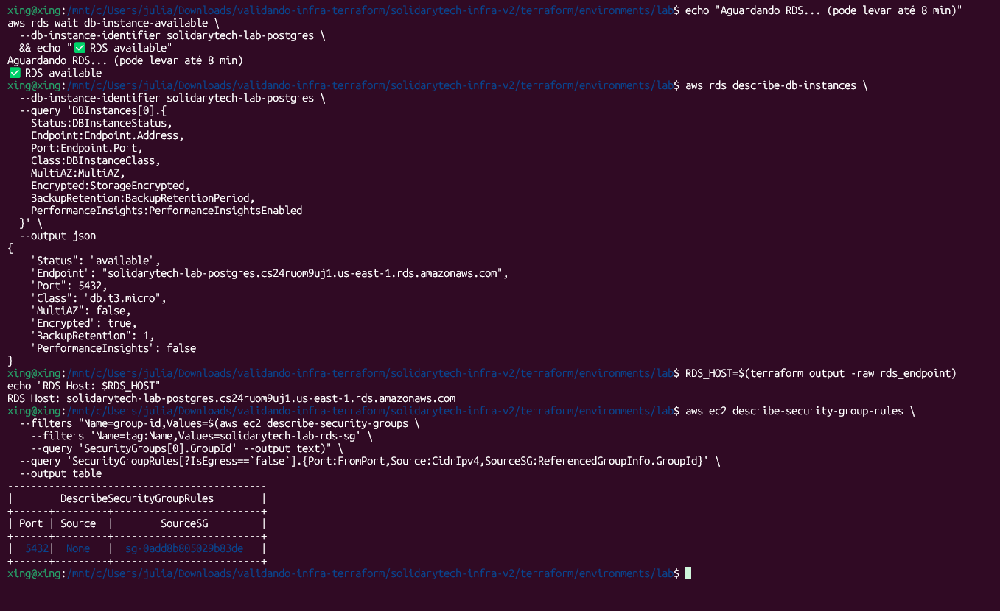
STEP 4 — ECS Fargate Spot¶
Depende de networking (subnets, SG), ECR (registry URL), RDS e SQS.
# 4.1 — Plan ECS
terraform plan \
-var="db_password=${TF_VAR_db_password}" \
-target=module.ecs \
-out=step4.tfplan \
-no-color | tee /tmp/step4-plan.txt
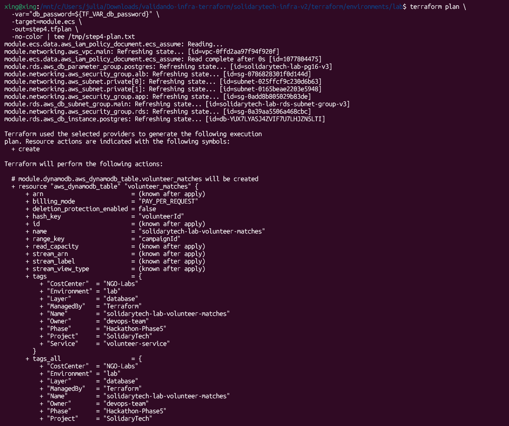
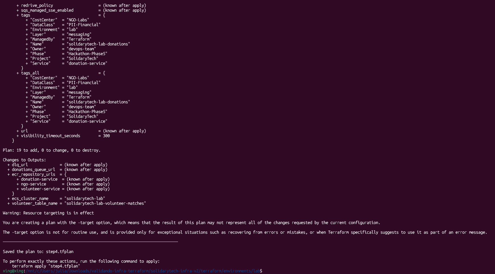
# 4.2 — Apply ECS
terraform apply step4.tfplan
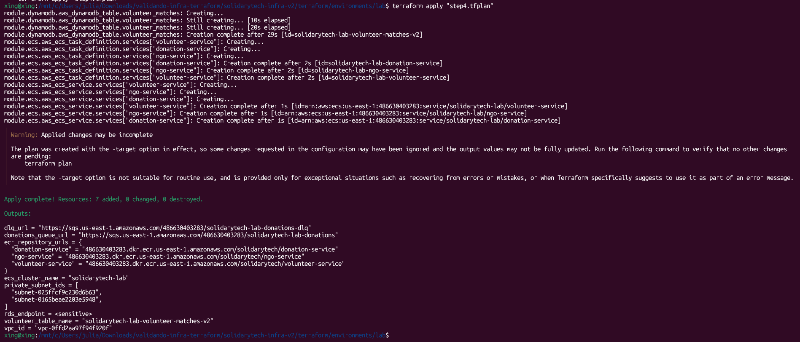
✅ Validar ECS¶
CLUSTER="solidarytech-lab"
# Cluster criado
aws ecs describe-clusters \
--clusters $CLUSTER \
--query 'clusters[0].{Name:clusterName,Status:status,ActiveServices:activeServicesCount}' \
--output json
# 3 services criados
aws ecs list-services --cluster $CLUSTER --output table
# Status dos services (desired vs running)
aws ecs describe-services \
--cluster $CLUSTER \
--services ngo-service donation-service volunteer-service \
--query 'services[*].{
Name:serviceName,
Status:status,
Desired:desiredCount,
Running:runningCount,
Pending:pendingCount
}' \
--output table
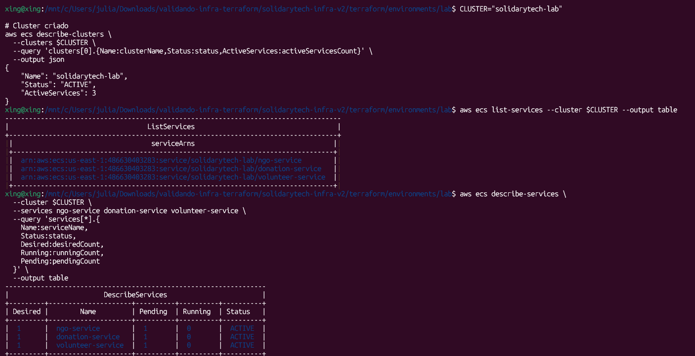
# Logs das tasks (se algo falhar, aqui está o erro)
LOG_GROUP="/ecs/solidarytech/lab/donation-service"
aws logs get-log-events \
--log-group-name $LOG_GROUP \
--log-stream-name $(aws logs describe-log-streams \
--log-group-name $LOG_GROUP \
--order-by LastEventTime \
--descending \
--query 'logStreams[0].logStreamName' --output text) \
--limit 50 \
--query 'events[*].message' \
--output text
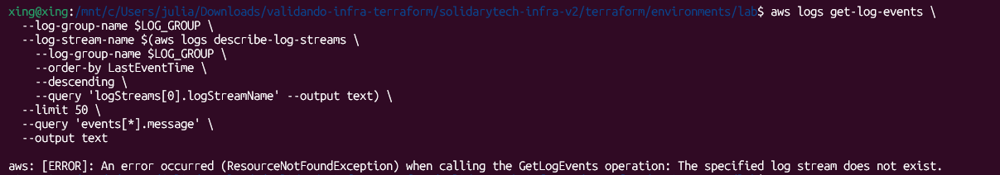
STEP 5 — Validação Final (todo ambiente)¶
cd terraform/environments/lab
# 5.1 — Apply completo sem -target (garante que não ficou nada pendente)
terraform plan \
-var="db_password=${TF_VAR_db_password}" \
-detailed-exitcode -no-color 2>&1 | tee /tmp/final-plan.txt
EXIT_CODE=$?
if [ $EXIT_CODE -eq 0 ]; then
echo "✅ Nenhuma mudança pendente — infra 100% aplicada"
elif [ $EXIT_CODE -eq 2 ]; then
echo "⚠️ Ainda há mudanças pendentes — aplique o plan acima"
else
echo "❌ Erro no plan"
fi
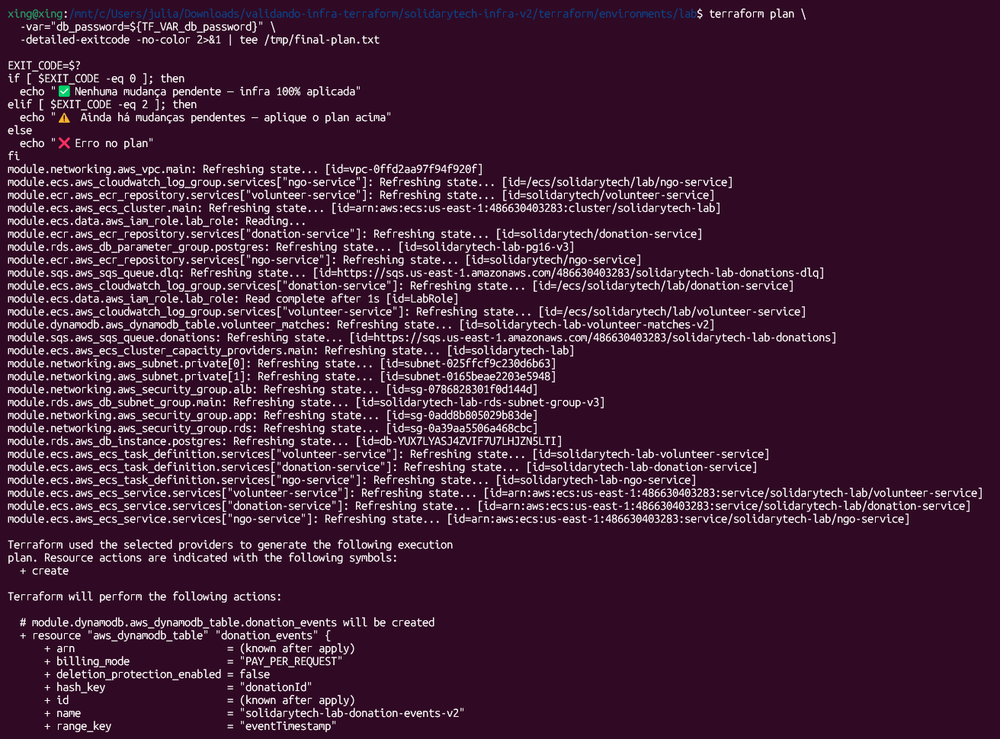
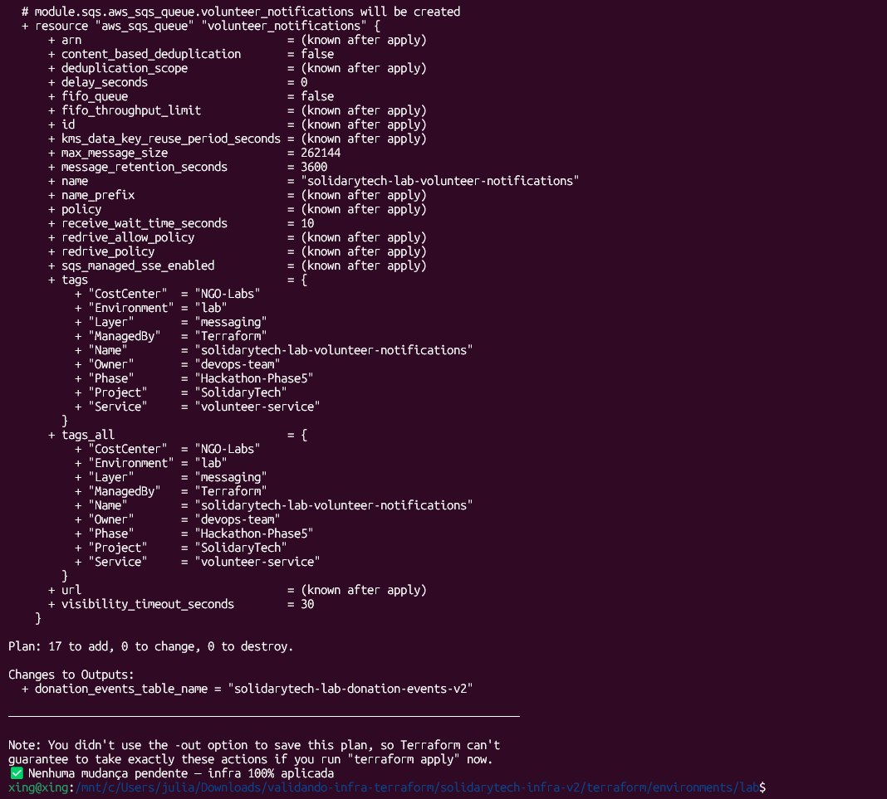
# 5.2 — Verificar tags em todos os recursos (FinOps)
TAGGED=$(aws resourcegroupstaggingapi get-resources \
--tag-filters Key=Project,Values=SolidaryTech \
--query 'length(ResourceTagMappingList)')
echo "Recursos tagueados com Project=SolidaryTech: $TAGGED"
# 5.3 — Outputs finais
terraform output -json | jq '{
vpc: .vpc_id.value,
ecs_cluster: .ecs_cluster_name.value,
ecr_repos: .ecr_repository_urls.value,
donations_queue: .donations_queue_url.value,
volunteer_table: .volunteer_table_name.value
}'
# 5.4 — State summary
echo ""
echo "=== Recursos no Terraform State ==="
terraform state list | sort | awk -F. '{print $1"."$2}' | sort -u
echo "Total: $(terraform state list | wc -l) recursos"
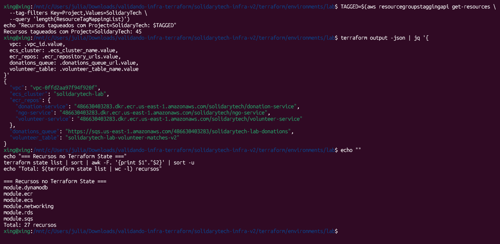
¶STEP 6 — Migrar para Backend S3 (antes do GitHub)¶
Depois de validar tudo localmente, migre o state para S3. Isso permite que o GitHub Actions acesse o mesmo state.
# 6.1 — Criar bucket de state
aws s3 mb s3://solidarytech-tfstate --region us-east-1
aws s3api put-bucket-versioning \
--bucket solidarytech-tfstate \
--versioning-configuration Status=Enabled
aws s3api put-bucket-encryption \
--bucket solidarytech-tfstate \
--server-side-encryption-configuration \
'{"Rules":[{"ApplyServerSideEncryptionByDefault":{"SSEAlgorithm":"AES256"}}]}'
aws s3api put-public-access-block \
--bucket solidarytech-tfstate \
--public-access-block-configuration \
"BlockPublicAcls=true,IgnorePublicAcls=true,BlockPublicPolicy=true,RestrictPublicBuckets=true"
echo "✅ Bucket criado e configurado"
# 6.2 — Descomentar o backend no main.tf
# (editar terraform/environments/lab/main.tf — remover o comentário do backend "s3")
# 6.3 — Migrar state local para S3
terraform init -migrate-state
# Responda "yes" quando perguntado
# 6.4 — Confirmar migração
aws s3 ls s3://solidarytech-tfstate/lab/ && echo "✅ State migrado para S3"
Comandos de Troubleshooting¶
# Ver log detalhado do Terraform
export TF_LOG=ERROR # ERROR | WARN | INFO | DEBUG | TRACE
terraform plan -var="db_password=${TF_VAR_db_password}" 2>&1 | grep -E "Error|error"
export TF_LOG=
# Inspecionar recurso específico no state
terraform state show module.networking.aws_vpc.main
terraform state show module.rds.aws_db_instance.postgres
# Forçar refresh do state (detectar mudanças manuais)
terraform refresh -var="db_password=${TF_VAR_db_password}"
# Remover recurso do state SEM destruir (use com cautela)
# terraform state rm module.ecs.aws_ecs_service.services[\"ngo-service\"]
# Destruir ambiente completo (cleanup de custos)
terraform destroy -var="db_password=${TF_V}"AR_db_password
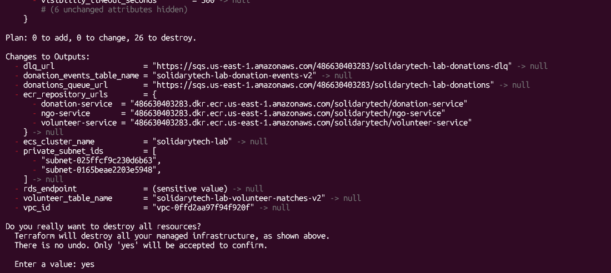
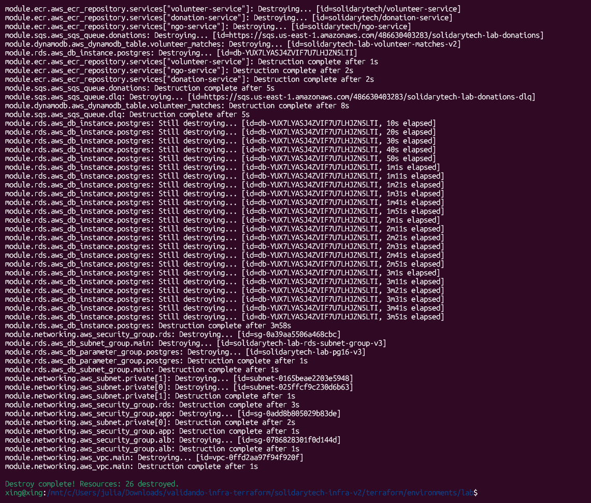
Estimativa de Custo Lab¶
| Recurso | Especificação | Custo/hora | Custo/mês |
|---|---|---|---|
| NAT Gateway | 1x us-east-1 | ~$0.045 | ~$32 |
| RDS PostgreSQL | db.t3.micro Single-AZ | ~$0.017 | ~$12 |
| ECS Fargate Spot | 3 tasks × 0.25 vCPU | ~$0.003 | ~$2 |
| DynamoDB | On-demand (idle) | $0 | ~$0 |
| SQS | < 1M msgs | $0 | ~$0 |
| ECR | < 0.5GB | ~$0.001 | ~$0.50 |
| Total | ~$47/mês |
💡 Dica FinOps: desligue o NAT Gateway fora do horário de trabalho. Ele sozinho custa ~$32/mês. Um script simples economiza ~$20/mês em lab.
# Destruir apenas NAT GW quando não usar (mantém o resto da infra)
terraform destroy \
-target=module.networking.aws_nat_gateway.main \
-target=module.networking.aws_eip.nat \
-var="db_password=${TF_VAR_db_password}" \
-auto-approve
# Recriar quando precisar
terraform apply \
-target=module.networking.aws_nat_gateway.main \
-target=module.networking.aws_eip.nat \
-var="db_password=${TF_VAR_db_password}" \
-auto-approve